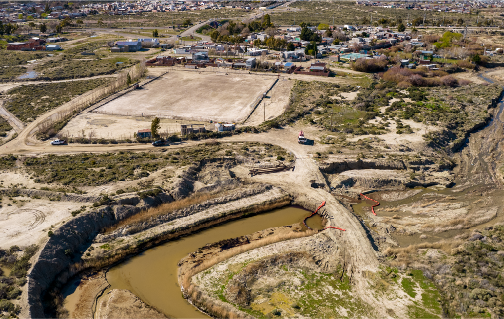

Comodoro Rivadavia ocupa un lugar único en la historia energética argentina. Aquí se descubrió el primer pozo de petróleo del país, el 13 de diciembre de 1907. Quince años más tarde nació YPF, la empresa que impulsó el desarrollo de la industria hidrocarburífera nacional. Durante más de un siglo, la ciudad creció junto al petróleo y se convirtió en uno de los principales polos productivos de la Cuenca del Golfo San Jorge.
Ese mismo desarrollo dejó una huella que hoy forma parte del principal desafío ambiental de la región. A medida que los yacimientos convencionales envejecen, las grandes operadoras trasladan sus inversiones hacia otras cuencas, y miles de pozos e instalaciones requieren tareas de cierre y remediación.
Con la reversión de yacimientos y el retiro de YPF de la provincia, Comodoro Rivadavia se transformó en el principal caso testigo de los pasivos ambientales hidrocarburíferos en la Argentina: un territorio donde conviven más de cien años de actividad petrolera con la necesidad de reparar los impactos que dejó esa actividad.
La ciudad refleja una realidad que también alcanza a otras localidades de la Cuenca del Golfo San Jorge. El retiro progresivo de empresas de las áreas maduras plantea un desafío común: garantizar que el cierre de la actividad no implique abandonar las obligaciones ambientales ni trasladar esos costos al Estado o a la comunidad.
La remediación de los pasivos es parte del proceso productivo y constituye una condición indispensable para una transición energética ordenada y responsable.

Una situación impostergable
En el ejido urbano de Comodoro Rivadavia existen aproximadamente:
- +6.000 pozos petroleros
- +3.500 pozos abandonados
- +1.000 pozos inactivos
- +100 sitios en estado crítico
¿Por qué Comodoro
es el caso testigo??
Porque reúne, en un mismo territorio, las principales características del problema que enfrentan las cuencas maduras de la Argentina:
- • Más de un siglo de actividad petrolera.
- • Miles de pozos distribuidos dentro del ejido urbano.
- • Yacimientos convencionales en declinación.
- • Empresas que trasladan inversiones hacia otras cuencas.
- • Pasivos ambientales que requieren identificación, monitoreo y remediación.
La necesidad de que quienes desarrollaron la actividad también asuman la responsabilidad de reparar los daños que dejaron.